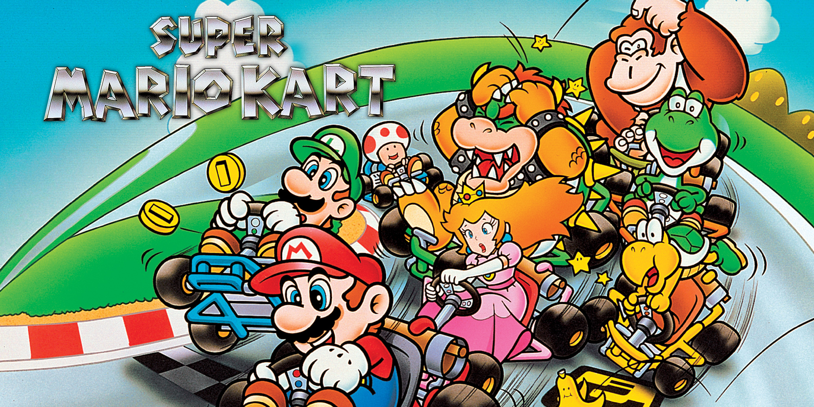
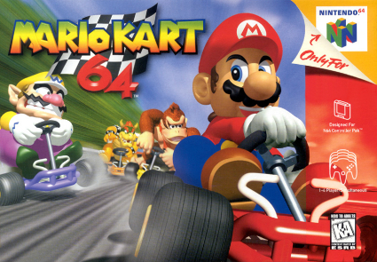
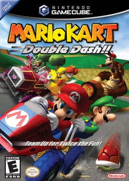
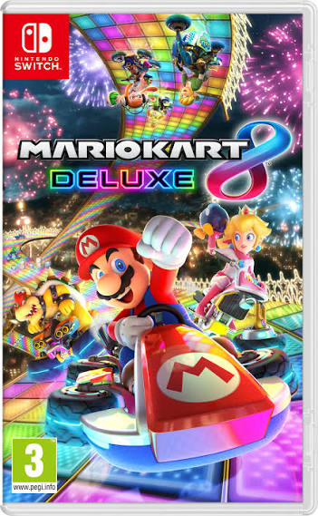

Mario Kart (1992):

O primeiro jogo da série foi lançado para o Super Nintendo em 1992. Ele apresentou as corridas com Mario, Luigi, Bowser e outros personagens do universo do encanador, além do modo multiplayer para dois jogadores. Ele tem um gráfico 2D que se assemelha ao 3D, com controles mais básicos e animações mais simples. Sua pista mais famosa é a Rainbow Road, tanto que foi colocada nos demais jogos da franquia.
Mario Kart 64 (1996)

Lançado para Nintendo 64 lançado em 1996, trouxe gráficos em 3D, pistas maiores e mudanças como na escolha de personagem, nas pistas e na jogabilidade. É considerado um dos jogos mais marcantes da franquia por diversos fãs. Trouxe um modo multiplayer mais amplo ao permitir partidas de até 4 jogadores. Esse jogo introduziu a franquia dois personagens, o Wario e o Donkey Kong. A pista mais famosa ainda é a Rainbow Road.
Mario Kart: Double Dash!! (2003)

Mario Kart: Double Dash foi lançado em 2003 e foi o primeiro jogo onde dois personagens dividiam o mesmo kart, permitindo estratégias diferentes durante as corridas, além disso troxe uma amplitude de jogadores em até 16 players competindo simultaneamente. Ele colocou novos personagens como o Baby Mario, Waluigi e Rei Boo. Sua pista mais famosa é a Baby Park.
Mario Kart 8 Deluxe (2017)

Mario Kart 8 Deluxe de 2017 tem duas versões e a versão para Nintendo Switch é a mais vendida da franquia, contando com dezenas de personagens, pistas e modos de jogo. Essa versão contém várias DLCs que proporcionam diversas pistas novas, outros personagens e até novos modos de jogos. Sua pista mais famosa aida é a Rainbow Road
Mario Kart World (2025)

Mario Kart Wold de 2025 foi lançado para Nintendo Switch 2, apresenta um mundo conectado entre as pistas e novas mecânicas que expandem a experiência tradicional. Nele foi introduzido o sistema de jogo mundo aberto e o off-road, que, graças a uma jogabilidade aperfeiçoada dês dos últimos jogos até esse, permite o jogador se movimentar fora das pistas pavimentadas e desbravar o mundo aberto interconectado.